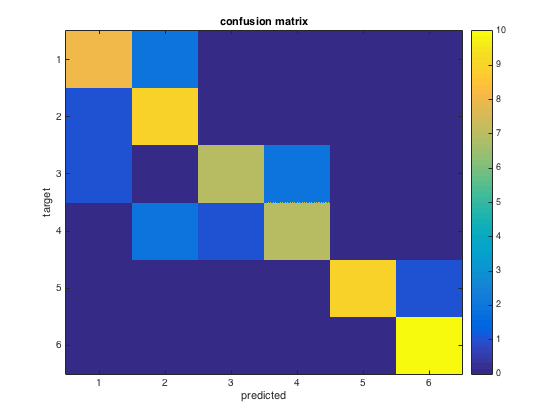

n-fold cross-validation classification with LDA classifier
- For CoSMoMVPA's copyright information and license terms, #
- see the COPYING file distributed with CoSMoMVPA. #
Contents
Define data
config=cosmo_config(); data_path=fullfile(config.tutorial_data_path,'ak6','s01'); % Load the dataset with VT mask ds = cosmo_fmri_dataset([data_path '/glm_T_stats_perrun.nii'], ... 'mask', [data_path '/vt_mask.nii']); % remove constant features ds=cosmo_remove_useless_data(ds);
set sample attributes
ds.sa.targets = repmat((1:6)',10,1); ds.sa.chunks = floor(((1:60)-1)/6)'+1; % Add labels as sample attributes classes = {'monkey','lemur','mallard','warbler','ladybug','lunamoth'}; ds.sa.labels = repmat(classes,1,10)'; % this is good practice after setting attributes manually cosmo_check_dataset(ds);
Part 1: 'manual' crossvalidation
nsamples=size(ds.samples,1); % should be 60 for this dataset % allocate space for preditions for all 60 samples all_pred=zeros(nsamples,1); % safety check: % to simplify this exercise, the code below assumes that .sa.chunks is in % the range 1..10; if that is not the case, the code may not work properly. % Therefore an 'assert' statement is used to verify that the chunks are as % required for the remainder of this exercise. assert(isequal(ds.sa.chunks,floor(((1:60)-1)/6)'+1)); nfolds=numel(unique(ds.sa.chunks)); % should be 10 % run n-fold cross-validation % in the k-th fold (k ranges from 1 to 10), test the LDA classifier on % samples with chunks==k and after training on all other samples. % % (in this exercise this is done manually, but easier solutions involve % using cosmo_nfold_partitioner and cosmo_crossvalidation_measure) for fold=1:nfolds % make a logical mask (of size 60x1) for the test set. It should have % the value true where ds.sa.chunks has the same value as 'fold', and % the value false everywhere else. Assign this to the variable % 'test_msk' % >@@> test_msk=ds.sa.chunks==fold; % <@@< % slice the input dataset 'ds' across samples using 'test_msk' so that % it has only samples in the 'fold'-th chunk. Assign the result to the % variable 'ds_test'; % >@@> ds_test=cosmo_slice(ds,test_msk); % <@@< % now make another logical mask (of size 60x1) for the training set. % the value true where ds.sa.chunks has a different value as 'fold', % and the value false everywhere else. Assign this to the variable % 'train_msk' % >@@> train_msk=ds.sa.chunks~=fold; % (alternative: train_msk=~test_msk) % <@@< % slice the input dataset again using train_msk, and assign to the % variable 'ds_train' % >@@> ds_train=cosmo_slice(ds,train_msk); % <@@< % Use cosmo_classify_lda to get predicted targets for the % samples in 'ds_test'. To do so, use the samples and targets % from 'ds_train' for training (as first and second argument for % cosmo_classify_lda), and the samples from 'ds_test' for testing % (third argument for cosmo_classify_lda). % Assign the result to the variable 'fold_pred', which should be a 6x1 % vector. % >@@> fold_pred=cosmo_classify_lda(ds_train.samples,ds_train.sa.targets,... ds_test.samples); % <@@< % store the predictions from 'fold_pred' in the 'all_pred' vector, % at the positions masked by 'test_msk'. % >@@> all_pred(test_msk)=fold_pred; % <@@< end % safety check: % for this exercise, the following code tests whether the predicted classes % is as they should be (i.e. the correct answer); if not an error is % raised. expected_pred=[ 1 1 1 2 1 1 2 1 1 1 2 1 2 2 2 2 2 2 2 2 4 3 1 3 3 4 3 3 3 3 4 4 2 4 4 4 4 4 3 2 5 5 5 5 5 6 5 5 5 5 6 6 6 6 6 6 6 6 6 6]; % check that the output is as expected if ~isequal(expected_pred(:),all_pred) error('expected predictions to be row-vector with [%s]''',... sprintf('%d ',all_pred_alt)); end % Compute classification accuracy of all_pred compared to the targets in % the input dataset 'ds', and assign to a variable 'accuracy' % >@@> accuracy=mean(all_pred==ds.sa.targets); % <@@< % print the accuracy fprintf('\nLDA all categories n-fold: accuracy %.3f\n', accuracy); % Visualize confusion matrix % the cosmo_confusion_matrix convenience function is used to compute the % confusion matrix [confusion_matrix,classes]=cosmo_confusion_matrix(ds.sa.targets,all_pred); nclasses=numel(classes); % print confusion matrix to terminal window fprintf('\nLDA n-fold cross-validation confusion matrix:\n') disp(confusion_matrix); % make a pretty figure figure imagesc(confusion_matrix,[0 10]) title('confusion matrix'); set(gca,'XTick',1:nclasses,'XTickLabel',classes); set(gca,'YTick',1:nclasses,'YTickLabel',classes); ylabel('target'); xlabel('predicted'); colorbar
LDA all categories n-fold: accuracy 0.833
LDA n-fold cross-validation confusion matrix:
8 2 0 0 0 0
1 9 0 0 0 0
1 0 7 2 0 0
0 2 1 7 0 0
0 0 0 0 9 1
0 0 0 0 0 10
 Part 2: use cosmo_nfold_partitioner
% This exercise replicates the analysis done in Part 1, but now % the the 'cosmo_nfold_partitioner' function is used to create a struct % that defines the cross-validation scheme (it contains the indices % for the train and set samples in each fold) partitions=cosmo_nfold_partitioner(ds); % Show partitions fprintf('\nPartitions for n-fold cross-validation:\n'); cosmo_disp(partitions) % Count how many folds there are in 'partitions', and assign to the % variable 'nfolds' % >@@> nfolds=numel(partitions.train_indices); % should be 10 % <@@< % allocate space for predictions of each sample (pattern) in 'ds' all_pred=zeros(nsamples,1); % As in part 1 (above), perform n-fold cross-validation using the LDA % classifier for fold=1:nfolds % implement cross-validation and store predicted labels in 'all_pred'; % use the contents of partitions to slice the dataset in train and test % sets for each fold % from the 'partitions' struct, get the train indices for the % 'fold'-th fold and assign to a variable 'train_idxs' % >@@> train_idxs=partitions.train_indices{fold}; % <@@< % do the same for the test indices, and assign to a variable % 'test_idxs' % >@@> test_idxs=partitions.test_indices{fold}; % <@@< % slice the dataset twice: % - once using 'train_idxs'; assign the result to 'ds_train' % - once using 'test_idxs' ; assign the result to 'ds_test' % >@@> ds_train=cosmo_slice(ds,train_idxs); ds_test=cosmo_slice(ds,test_idxs); % <@@< % compute predictions for the samples in 'ds_test' after training % using the samples and targets in 'ds_train' % >@@> fold_pred=cosmo_classify_lda(ds_train.samples,ds_train.sa.targets,... ds_test.samples); % <@@< % store the predictions from 'fold_pred' in the 'all_pred' vector, % at the positions indexed by 'test_idxs'. % >@@> all_pred(test_idxs)=fold_pred; % <@@< end % Compute classification accuracy of all_pred compared to the targets in % the input dataset 'ds', and assign to a variable 'accuracy' % >@@> accuracy=mean(all_pred==ds.sa.targets); % <@@< fprintf(['\nLDA all categories n-fold (with partitioner): '... 'accuracy %.3f\n'], accuracy); % Note: cosmo_crossvalidation_measure can perform the above operations as % well (and in an easier way), but using that function is not part of % this exercise.
Partitions for n-fold cross-validation:
.train_indices
{ [ 7 [ 1 [ 1 ... [ 1 [ 1 [ 1
8 2 2 2 2 2
9 3 3 3 3 3
: : : : : :
58 58 58 58 58 52
59 59 59 59 59 53
60 ]@54x1 60 ]@54x1 60 ]@54x1 60 ]@54x1 60 ]@54x1 54 ]@54x1 }@1x10
.test_indices
{ [ 1 [ 7 [ 13 ... [ 43 [ 49 [ 55
2 8 14 44 50 56
3 9 15 45 51 57
4 10 16 46 52 58
5 11 17 47 53 59
6 ] 12 ] 18 ] 48 ] 54 ] 60 ] }@1x10
LDA all categories n-fold (with partitioner): accuracy 0.833